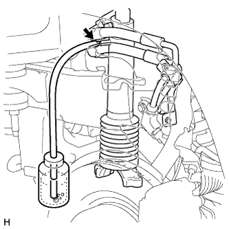
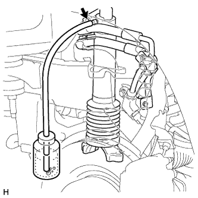
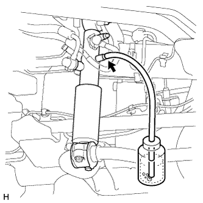
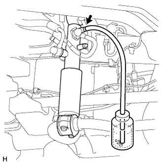
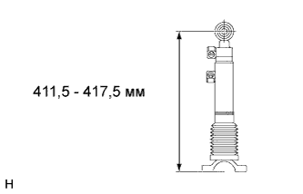
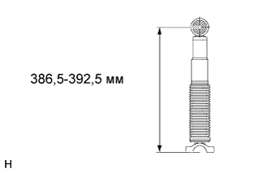

СИСТЕМА УПРАВЛЕНИЯ ПОДВЕСКОЙ (для моделей с KDSS) > ПРОКАЧКА |
| 1. УДАЛИТЕ ВОЗДУХ ИЗ ЖИДКОСТИ ПОДВЕСКИ |
Снимите защиту распределителя стабилизатора (Нажмите здесь).
Проверьте трубные соединения и удостоверьтесь, что детали гидравлического контура не повреждены.
| *1 | Прокачной штуцер корпуса стабилизатора с гидроаккумулятором | *2 | Заслонка верхней камеры корпуса блока управления стабилизаторами с гидроаккумулятором |
| *3 | Заслонка нижней камеры корпуса блока управления стабилизаторами с гидроаккумулятором | *4 | Впускной канал корпуса блока управления стабилизаторами с гидроаккумулятором |
| *5 | Прокачной штуцер верхней камеры цилиндра управления переднего стабилизатора | *6 | Прокачной штуцер нижней камеры цилиндра управления переднего стабилизатора |
| *7 | Прокачной штуцер верхней камеры цилиндра управления заднего стабилизатора | *8 | Прокачной штуцер нижней камеры цилиндра управления заднего стабилизатора |
Добавьте новую жидкость в SST (масляный насос высокого давления) и удалите воздух из шлангов SST.
Снимите колпачок рабочего клапана. Затем введите жидкость в SST (масляный насос высокого давления) и подсоедините SST к впускному каналу жидкости для подвески.
Ослабьте заслонки корпуса блока управления стабилизаторами с гидроаккумулятором.
| *1 | Корпус стабилизатора с гидроаккумулятором в сборе | *2 | Заслонка верхней камеры корпуса блока управления стабилизаторами с гидроаккумулятором |
| *3 | Заслонка нижней камеры корпуса блока управления стабилизаторами с гидроаккумулятором | *4 | Впускной канал корпуса блока управления стабилизаторами с гидроаккумулятором |
Добавьте жидкость с помощью SST (масляный насос высокого давления).
Приведите в действие SST (масляный насос высокого давления) и добавляйте жидкость, пока давление не достигнет 5 МПа (51,0 кгс/см2, 725 фунтов на кв. дюйм).*1
Проверьте, нет ли утечек жидкости через трубные соединения и детали гидравлического контура.
 |
Добавьте жидкость в корпус блока управления стабилизаторами с гидроаккумулятором.*2
|  |
Добавьте жидкость в нижнюю камеру цилиндра управления переднего стабилизатора.*3
|  |
Добавьте жидкость в верхнюю камеру цилиндра управления переднего стабилизатора.*4
|  |
Добавьте жидкость в нижнюю камеру цилиндра управления заднего стабилизатора.*5
|  |
Добавьте жидкость в верхнюю камеру цилиндра управления заднего стабилизатора.*6
Повторяйте шаги *1-*6, пока воздух не исчезнет из жидкости.
Удалите воздух из системы с помощью SST (масляный насос высокого давления).
Удалите воздух из корпуса стабилизатора с гидроаккумулятором.
Удалите воздух из верхней камеры цилиндра управления переднего стабилизатора.
Удалите воздух из верхней камеры цилиндра управления заднего стабилизатора.
|  |
Отсоедините рычаг управления переднего стабилизатора и стойку переднего стабилизатора, а затем установите максимальную длину цилиндра управления переднего стабилизатора.
|  |
Отсоедините задний стабилизатор поперечной устойчивости и стойку заднего стабилизатора, а затем установите максимальную длину цилиндра управления заднего стабилизатора.
Удалите воздух из нижней камеры цилиндра управления переднего стабилизатора.
Создайте с помощью SST (масляный насос высокого давления) давление 7 МПа (71,4 кгс/см2, 1015 фунтов на кв. дюйм).
Ослабьте прокачной штуцер нижней камеры цилиндра управления переднего стабилизатора, чтобы удалить воздух.
Затяните прокачной штуцер, чтобы можно было подать давление. Повторяйте описанные шаги, пока воздух не исчезнет из жидкости.
Затяните прокачной штуцер нижней камеры цилиндра управления переднего стабилизатора.
Удалите воздух из нижней камеры цилиндра управления заднего стабилизатора.
Создайте с помощью SST (масляный насос высокого давления) давление 7 МПа (71,4 кгс/см2, 1015 фунтов на кв. дюйм).
Ослабьте прокачной штуцер нижней камеры цилиндра управления заднего стабилизатора, чтобы удалить воздух.
Затяните прокачной штуцер, чтобы можно было подать давление. Повторяйте описанные шаги, пока воздух не исчезнет из жидкости.
Затяните прокачной штуцер нижней камеры цилиндра управления заднего стабилизатора.
Подсоедините рычаг управления переднего стабилизатора к стойке переднего стабилизатора и задний стабилизатор к стойке заднего стабилизатора.
Убедившись в том, что все колеса опираются на землю, подайте заданное давление с использованием SST. Поддерживайте это значение в течение 2-3 мин, чтобы стабилизировать давление.
| Состояние | Заданные условия |
| Температура жидкости 20°C (68°F) | 2,6 - 3 МПа (26,6 - 30,5 кгс/см2, 377 - 435 фунтов на кв.дюйм) |
Измерьте высоту автомобиля (Нажмите здесь).
Затяните заслонки корпуса блока управления стабилизаторами с гидроаккумулятором.
Отсоедините SST (масляный насос высокого давления) от впускного канала жидкости для подвески.
Установите колпачки рабочих клапанов на впускной канал жидкости для подвески.
Проверьте наличие утечек жидкости для подвески (Нажмите здесь).
Установите защиту распределителя стабилизатора (Нажмите здесь).
| 2. ДИАГРАММА РЕГУЛИРОВКИ ТЕМПЕРАТУРЫ ПРИ ЗАЛИВКЕ ЖИДКОСТИ |
| *1 | 2,42 МПа (24,7 кгс/см2, 351 фунт на кв.дюйм) | *2 | 2,50 МПа (25,5 кгс/см2, 363 фунта на кв.дюйм) |
| *3 | 2,59 МПа (26,4 кгс/см2, 376 фунтов на кв.дюйм) | *4 | 2,67 МПа (27,2 кгс/см2, 387 фунтов на кв.дюйм) |
| *5 | 2,76 МПа (28,1 кгс/см2, 400 фунтов на кв.дюйм) | *6 | 2,85 МПа (29,1 кгс/см2, 413 фунтов на кв.дюйм) |
| *7 | 2,95 МПа (30,1 кгс/см2, 428 фунтов на кв.дюйм) | *8 | 3,05 МПа (31,1 кгс/см2, 442 фунта на кв.дюйм) |
| *9 | 3,27 МПа (33,3 кгс/см2, 474 фунтов на кв.дюйм) | *10 | 3,27 МПа (33,3 кгс/см2, 474 фунтов на кв.дюйм) |
| *11 | 3,38 МПа (34,5 кгс/см2, 490 фунтов на кв.дюйм) | *12 | 2,39 МПа (24,4 кгс/см2, 347 фунтов на кв.дюйм) |
| *13 | 2,46 МПа (25,1 кгс/см2, 357 фунтов на кв.дюйм) | *14 | 2,53 МПа (25,8 кгс/см2, 367 фунтов на кв.дюйм) |
| *15 | 2,60 МПа (26,5 кгс/см2, 377 фунтов на кв.дюйм) | *16 | 2,67 МПа (27,2 кгс/см2, 387 фунтов на кв.дюйм) |
| *17 | 2,75 МПа (28,0 кгс/см2, 399 фунтов на кв.дюйм) | *18 | 2,82 МПа (28,8 кгс/см2, 409 фунтов на кв.дюйм) |
| *19 | 2,90 МПа (29,6 кгс/см2, 421 фунт на кв.дюйм) | *20 | 2,98 МПа (30,4 кгс/см2, 432 фунта на кв.дюйм) |
| *21 | 3,06 МПа (31,2 кгс/см2, 444 фунта на кв.дюйм) | *22 | 3,14 МПа (32,0 кгс/см2, 455 фунтов на кв.дюйм) |